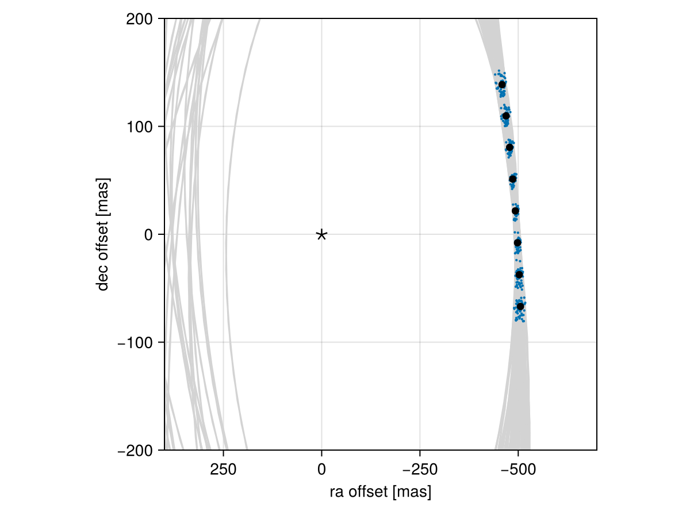

Posterior Predictive Checks
A posterior predictive check compares our true data with simulated data drawn from the posterior. This allows us to evaluate if the model is able to reproduce our observations appropriately. Samples drawn from the posterior predictive distribution should match the locations of the original data.
To demonstrate, we will fit a model to relative astrometry data:
using Octofitter
using Distributions
astrom_like = PlanetRelAstromLikelihood(Table(;
epoch= [50000,50120,50240,50360,50480,50600,50720,50840,],
ra = [-505.764,-502.57,-498.209,-492.678,-485.977,-478.11,-469.08,-458.896,],
dec = [-66.9298,-37.4722,-7.92755,21.6356, 51.1472, 80.5359, 109.729, 138.651,],
σ_ra = fill(10.0, 8),
σ_dec = fill(10.0, 8),
cor = fill(0.0, 8)
))
@planet b Visual{KepOrbit} begin
a ~ truncated(Normal(10, 4), lower=0, upper=100)
e ~ Uniform(0.0, 0.5)
i ~ Sine()
ω ~ UniformCircular()
Ω ~ UniformCircular()
θ ~ UniformCircular()
tp = θ_at_epoch_to_tperi(system,b,50420) # reference epoch for θ. Choose an MJD date near your data.
end astrom_like
@system Tutoria begin
M ~ truncated(Normal(1.2, 0.1), lower=0)
plx ~ truncated(Normal(50.0, 0.02), lower=0)
end b
model = Octofitter.LogDensityModel(Tutoria)
using Random
Random.seed!(0)
chain = octofit(model)Chains MCMC chain (1000×28×1 Array{Float64, 3}):
Iterations = 1:1:1000
Number of chains = 1
Samples per chain = 1000
Wall duration = 4.76 seconds
Compute duration = 4.76 seconds
parameters = M, plx, b_a, b_e, b_i, b_ωy, b_ωx, b_Ωy, b_Ωx, b_θy, b_θx, b_ω, b_Ω, b_θ, b_tp
internals = n_steps, is_accept, acceptance_rate, hamiltonian_energy, hamiltonian_energy_error, max_hamiltonian_energy_error, tree_depth, numerical_error, step_size, nom_step_size, is_adapt, loglike, logpost, tree_depth, numerical_error
Summary Statistics
parameters mean std mcse ess_bulk ess_tail r ⋯
Symbol Float64 Float64 Float64 Float64 Float64 Floa ⋯
M 1.1802 0.0919 0.0038 576.3556 717.2317 0.9 ⋯
plx 50.0003 0.0212 0.0007 995.1497 476.7088 1.0 ⋯
b_a 11.6775 2.2362 0.1418 192.2445 251.2908 1.0 ⋯
b_e 0.1501 0.1088 0.0051 480.3162 603.0952 1.0 ⋯
b_i 0.6294 0.1587 0.0126 183.4891 120.3205 1.0 ⋯
b_ωy -0.0762 0.7301 0.0627 176.3180 594.7249 1.0 ⋯
b_ωx -0.0158 0.6914 0.0573 173.4315 804.2367 1.0 ⋯
b_Ωy -0.0304 0.7503 0.1429 36.2541 445.9426 1.0 ⋯
b_Ωx -0.0169 0.6724 0.1219 36.5430 536.3761 1.0 ⋯
b_θy 0.0742 0.0104 0.0003 911.8091 562.1018 0.9 ⋯
b_θx -1.0021 0.0966 0.0033 890.7921 590.3131 1.0 ⋯
b_ω -0.2552 1.8885 0.1365 263.6586 558.7647 1.0 ⋯
b_Ω -0.5538 1.7963 0.3036 51.8516 512.7275 1.0 ⋯
b_θ -1.4969 0.0071 0.0002 1024.6176 733.7565 1.0 ⋯
b_tp 42769.7618 4742.1749 276.6483 279.2739 602.8064 1.0 ⋯
2 columns omitted
Quantiles
parameters 2.5% 25.0% 50.0% 75.0% 97.5%
Symbol Float64 Float64 Float64 Float64 Float64
M 1.0019 1.1161 1.1820 1.2437 1.3606
plx 49.9553 49.9867 50.0006 50.0149 50.0406
b_a 8.3733 10.0762 11.3162 12.9405 17.1445
b_e 0.0073 0.0584 0.1255 0.2231 0.3800
b_i 0.2446 0.5373 0.6430 0.7382 0.8922
b_ωy -1.0648 -0.7689 -0.2512 0.6722 1.0585
b_ωx -1.0663 -0.6864 -0.0437 0.6692 1.0234
b_Ωy -1.0679 -0.7924 -0.0298 0.7642 1.0598
b_Ωx -1.0759 -0.6098 -0.0644 0.5743 1.0581
b_θy 0.0548 0.0673 0.0737 0.0805 0.0956
b_θx -1.1944 -1.0636 -0.9976 -0.9381 -0.8175
b_ω -2.9924 -2.1281 -0.0707 1.2329 2.9471
b_Ω -3.0431 -2.3776 -0.2130 0.8413 2.9339
b_θ -1.5110 -1.5015 -1.4970 -1.4923 -1.4836
b_tp 32219.5930 39598.2064 43688.9055 46062.3990 49856.9328
We now have our posterior as approximated by the MCMC chain. Convert these posterior samples into orbit objects:
# Instead of creating orbit objects for all rows in the chain, just pick
# every twentieth row.
ii = 1:20:1000
orbits = Octofitter.construct_elements(chain, :b, ii)50-element Vector{Visual{KepOrbit{Float64}, Float64}}:
Visual{KepOrbit{Float64}, Float64}(KepOrbit(11.8, 0.244, 0.526, -3.1, 3.22, 38600.0, 1.05), 49.988075869617845, 4.1262840469794e6)
Visual{KepOrbit{Float64}, Float64}(KepOrbit(14.4, 0.456, 0.703, 0.613, 5.65, 34500.0, 1.24), 49.99209636522073, 4.125952200386171e6)
Visual{KepOrbit{Float64}, Float64}(KepOrbit(10.2, 0.0424, 0.572, -2.39, 1.57, 40600.0, 1.2), 49.97973916361533, 4.1269723182180696e6)
Visual{KepOrbit{Float64}, Float64}(KepOrbit(11.4, 0.0941, 0.682, -2.85, 1.3, 50200.0, 1.09), 50.002000507669415, 4.1251349527177946e6)
Visual{KepOrbit{Float64}, Float64}(KepOrbit(13.5, 0.365, 0.759, -2.66, 3.08, 37400.0, 1.26), 50.0030490694303, 4.125048448817524e6)
Visual{KepOrbit{Float64}, Float64}(KepOrbit(11.3, 0.04, 0.615, 2.09, 0.537, 46000.0, 1.17), 49.97843677175508, 4.127079863301548e6)
Visual{KepOrbit{Float64}, Float64}(KepOrbit(10.4, 0.058, 0.524, 1.15, 0.555, 44800.0, 1.2), 50.014297085343216, 4.1241207418757537e6)
Visual{KepOrbit{Float64}, Float64}(KepOrbit(17.6, 0.0431, 1.01, 1.07, 0.217, 36400.0, 1.22), 50.04344009124333, 4.1217190429738765e6)
Visual{KepOrbit{Float64}, Float64}(KepOrbit(9.15, 0.181, 0.538, 0.974, 0.762, 45800.0, 1.17), 49.96956595681232, 4.127812520490385e6)
Visual{KepOrbit{Float64}, Float64}(KepOrbit(12.0, 0.0705, 0.71, -1.26, 3.46, 44900.0, 1.27), 49.97497849454671, 4.1273654579462744e6)
⋮
Visual{KepOrbit{Float64}, Float64}(KepOrbit(10.9, 0.0853, 0.546, 3.14, 3.76, 42100.0, 1.22), 49.99950411480671, 4.12534091390953e6)
Visual{KepOrbit{Float64}, Float64}(KepOrbit(10.5, 0.156, 0.465, -2.32, 2.63, 42000.0, 1.24), 50.027881295873414, 4.1230009078360456e6)
Visual{KepOrbit{Float64}, Float64}(KepOrbit(9.97, 0.0619, 0.466, 2.51, 4.32, 42800.0, 1.11), 49.98253035358294, 4.126741854421024e6)
Visual{KepOrbit{Float64}, Float64}(KepOrbit(11.3, 0.0702, 0.639, 2.97, 1.05, 48900.0, 1.25), 49.98984284361976, 4.1261381966181905e6)
Visual{KepOrbit{Float64}, Float64}(KepOrbit(8.92, 0.134, 0.6, 0.306, 1.3, 45900.0, 1.25), 49.99827118455138, 4.125442642579458e6)
Visual{KepOrbit{Float64}, Float64}(KepOrbit(10.9, 0.148, 0.716, 1.72, 0.741, 46100.0, 1.19), 50.00386261093365, 4.124981336039806e6)
Visual{KepOrbit{Float64}, Float64}(KepOrbit(11.0, 0.273, 0.431, 0.722, 5.62, 40100.0, 1.14), 50.03523651997755, 4.1223948230492454e6)
Visual{KepOrbit{Float64}, Float64}(KepOrbit(9.81, 0.198, 0.566, 1.15, 0.224, 44400.0, 1.14), 49.981086075511165, 4.12686110278548e6)
Visual{KepOrbit{Float64}, Float64}(KepOrbit(15.5, 0.0716, 0.882, -0.0538, 0.169, 35200.0, 1.28), 49.97920211206099, 4.1270166646022564e6)Calculate and plot the location the planet would be at each observation epoch:
using CairoMakie
epochs = astrom_like.table.epoch' # transpose
x = raoff.(orbits, epochs)[:]
y = decoff.(orbits, epochs)[:]
fig = Figure()
ax = Axis(
fig[1,1], xlabel="ra offset [mas]", ylabel="dec offset [mas]",
xreversed=true,
aspect=1
)
for orbit in orbits
Makie.lines!(ax, orbit, color=:lightgrey)
end
Makie.scatter!(
ax,
x, y,
markersize=3,
)
fig
Makie.scatter!(ax, astrom_like.table.ra, astrom_like.table.dec,color=:black, label="observed")
Makie.scatter!(ax, [0],[0], marker='⋆', color=:black, markersize=20,label="")
Makie.xlims!(400,-700)
Makie.ylims!(-200,200)
fig
Looks like a great match to the data! Notice how the uncertainty around the middle point is lower than the ends. That's because the orbit's posterior location at that epoch is also constrained by the surrounding data points. We can know the location of the planet in hindsight better than we could measure it!
You can follow this same procedure for any kind of data modelled with Octofitter.